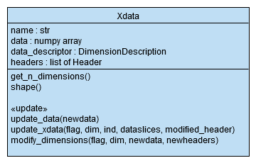

Module xdata : defining a data structure¶
xdata module is a module to define a structure to store the data in the form of an N dimensional array as well as the description of the data and each of the dimensions (names, types, units, scale, ...)
- This module uses:
- pandas as pd
- numpy as np
- operator
- abc
There are 6 classes in this module:
- Color:
- This class allows defining colors, either as RGB values or using predefined strings.
- DimensionDescription:
- For a specific dimension, DimensionDescription stores a label,a dimension_type (‘numeric’, ‘logical’, ‘string’, or ‘mixed’), possibly a unit and the corresponding conversion table. It allows to determine the dimension_type of an element, and access the default value of a given dimension_type.
- Header:
- Abstract class (subclasses are CategoricalHeader and MeasureHeader). Headers contains information about a dimension of the NDimensional data, such as a general label, the number of element, the description of the dimension/subdimensions, and allows to access the values to display on the axis.
- CategoricalHeader:
- CategoricalHeader is a subclass of Header. It is used to characterize a dimension in which the data has no regular organisation. It usually is a list of elements. However, such elements can have interesting features of different types. That’s why such features are stored in columns, each of them described by a DimensionDescription object.
- MeasureHeader:
- MeasureHeader is a subclass of Header. It is used for data acquired by equally spaced sample in a continuous dimension such as time or space. In which case, there is only one subdimension (i.e. only one column).
- Xdata:
- Xdata is used to store the data. Xdata is a container for an ND (N dimensional) array with all the values/data, as well as all of the headers describing each of the N dimensions, stored in a list. Xdata also has the name of the whole set of data and a data_descriptor attribute to describe the data.
UML diagram of the xdata module
Color class¶
-
class
xdata.Color(rgb)[source]¶ Defines colors.
This class allows defining colors, either as RGB values or using predefined strings.
Parameters
- rgb:
- Either a 3-tuple with 3 integers between 0 and 255, or a predefined string. Predefined strings are ‘black’, ‘white’, ‘red’, ‘green’, ‘blue’, ‘yellow’, ‘cyan’, ‘magenta’
Attributes
- rgb:
- 3-tuple with 3 integers between 0 and 255
DimensionDescription class¶
-
class
xdata.DimensionDescription(label, dimension_type, unit=None)[source]¶ This class aims at defining a dimension.
This class allows to define a dimension with a name, a type (‘numeric, ‘logical’, ‘string’, ‘color’ or ‘mixed’), and possibly a unit for numerical dimensions.
Parameters
- label:
name for the dimension (type str (e.g. ‘time’))
- dimension_type:
can be ‘numeric’, ‘logical’, ‘string’, ‘color’ or ‘mixed’
- unit:
One can define only the unit (e.g. mm) or the conversions as well in the form of a list (e.g. [‘mm’, 10**(-3), ‘m’, 1]).
(type str or list)
optional (default value = None)
Attributes
- label:
- name of the dimension (type str)
- dimension_type:
- ‘numeric’, ‘logical’, ‘string’, ‘color’ or ‘mixed’
- unit:
- currently used unit (type str)
- all_units:
- list of dictionaries for unit conversions
Methods
- set_dimtype_to_mixed:
- changing the dimension_type to ‘mixed’ if adding values that are not of the correct dimension_type (merging lines for instance)
- copy:
- to copy a DimensionDescription instance
(static methods)
- infertype(x, getdefaultvalue=False):
- gives the dimension_type of the x element and possibly the associated defaultvalue
- defaultvalue(dimension_type):
- gives the default value associated to a certain dimension_type
Examples
t = DimensionDescription(‘time’,’numeric’,[‘s, 1, ‘ms’, 10**(-3), ‘min’, 60, ‘hour’, 3600])
c = DimensionDescription(‘condition’,’string’)
Note
Values corresponding to a DimensionDescription of dimension_type ‘color’ are Color objects
Header abstract class¶
UML diagram of the abstract class Header and its subclasses
-
class
xdata.Header[source]¶ This abstract class allows the creation of headers for the different dimensions of a dataset.
Header is an abstract class that has two subclasses: CategoricalHeader and MeasureHeader. A Header object fully describes a dimension. A CategoricalHeader is used for data with no regular organisation. It usually correspond to a list of elements. However, such elements can have interesting features of different types. That’s why such features are stored in columns, each of them described by a DimensionDescription object. A MeasureHeader is used for data acquired with regular intervals in a continuous dimension such as time or space. In which case, there is only one subdimension (i.e. only one column witch is not stored).
Attributes
- label:
- name of the dimension (type str)
- column_descriptors:
- list of the DimensionDescription of each of the columns of values
- is_measure:
- true if the header is a MeasureHeader instance, false if it is a CategoricalHeader instance
- is_categorical_with_values:
- true if it is an instance of CategoricalHeader and that values is not None. If it is a categorical header but with no column or a measure header, it is false.
- is_undifferentiated:
- true if it is a categorical header with no values (not is_categorical_with_values)
Methods
(abstract methods)
- n_elem:
- number of element in the column(s)/ number of samples
- is_categorical:
- differentiate measure and categorical headers for the properties is_measure, is_categorical_with_values and is_undifferentiated
- __eq__:
- compares all the fields of the headers (returns True if all the fields are the same) it can be used by writing header1 == header2
- get_n_columns:
- gives the number of columns (1 for MeasureHeader, 0 to n for CategoricalHeader)
- get_units:
- gives the list of the unit used for each column (‘no unit’ is returned for each column with no specified unit)
- get_all_units:
- gives the list of conversion table for each column (‘no unit’ is returned for each column with no specified unit)
- disp:
- gives the main attributes of a Header
- get_value(line_num, column=None):
- gives the value located at the line line_num and at the column column (defined by it’s label or it’s number) or the fist one. Since we use python, we have decided that to access the first element of the column, line_num must be equal to 0.
- get_item_name(line_num):
- line_num can here be an integer or a list of integer. The function returns the corresponding values of the first column.
- copy:
- creates a copy of the header
(non abstract method)
- check_header_update(flag, ind, new_header):
flag: ‘all’, ‘dim_chg’, ‘new’, ‘remove’, ‘chg’, ‘perm’,’chg&new’ or ‘chg&rm’
ind: numpy.array of shape (n,)
basics checks when updating data and giving a new header
Examples
- CategoricalHeader: (with values)
label: ‘fruits’
- column_descriptors: (list of DimensionDescriptors, simplified here)
1/ label: ‘fruits’, dimension_type: ‘string’, no unit
2/ label: ‘prices’, dimension_type: ‘numeric’, unit: ‘euros/kg’
3/ label: ‘color’, dimension_type: ‘string’, no unit
n_elem: 4
- values:
[[‘apple’, 0.5, ‘red’ ]
[‘pear’, 0.75, ‘green’]
[‘banana’, 0.66, ‘yellow’]
[‘cherry’, 0.89, ‘red’]]
‘fruits’fruits prices color apple 0.5 red pear 0.75 green banana 0.66 yellow cherry 0.89 red
- CategoricalHeader: (undifferentiated)
label: ‘fruits’
column_descriptors: (list of DimensionDescriptors): None
n_elem: 4
values: None
‘fruits’fruits 1 2 3 4 - MeasureHeader:
label: ‘x’
column_descriptors: (list of one DimensionDescription)
label: ‘x’,
dimension_type: ‘numeric’,
unit: ‘mm’,
all_units: [{unit: ‘mm’, ‘value’: 10**(-3)}, {unit: ‘m’, ‘value’: 1}]
n-elem: 4
start: 1
scale: 2
‘x’
x 1 3 5 7
CategoricalHeader class¶
-
class
xdata.CategoricalHeader(label, column_descriptors=None, n_elem=None, values=None)[source]¶ This class allows the creation of a header for a categorical dimension of a dataset.
CategoricalHeader is used for categorical dimensions of a dataset. This means that this dimension is either not continuous or that the data has not been collected regularly in this dimension. Therefore, their is no scale, measure for this dimension. It is more a collection of objects.
A CategoricalHeader has a general label as well as one or several DimensionDescription objects stored in column_descriptors to describe each of the features. For each feature, values can be given (e.g. for ‘fruits’ values would be ‘apple’, ‘pear’, ‘blueberry’, ‘watermelon’...) or be a list of numbers. The first case corresponds to ‘is_categorical_with_values’, the second to ‘is_undifferentiated’
Parameters
- label:
name of the header (type: str)
- column_descriptors:
description of the dimension of each feature
(type str, DimensionDescription or a list of such elements)
(optional, the case with no column is possible. The legend would then be a list of int [1, 2, ...], it is undifferentiated)
- n_elem:
number of element in the column(s)
(type int)
(optional if values is specified)
- values:
content of the various subdimensions
(type DataFrame from pandas (pandas.core.frame.DataFrame) of shape (n_elem, len(column_descriptors))
(optional if it is just undifferentiated series of measures and that n_elem is given)
Attributes
- label:
- name of the dimension (type str)
- column_descriptors:
- list of the DimensionDescription of each of the columns of values
- values:
- content of the various subdimensions (pandas DataFrame (pandas.core.frame.DataFrame)of shape (n_elem, len(column_descriptors))
Methods
(methods imposed by inheritance)
- n_elem:
- number of element in the column(s)/ number of samples number of lines of values
- is_categorical:
- differentiate measure and categorical headers for the properties is_measure, is_categorical_with_values and is_undifferentiated
- is_categorical:
- returns True since it is the class CategoricalHeader
- __eq__:
- compares all the fields of the headers (returns True if all the fields are the same) it can be used by writing header1 == header2
- get_n_columns:
- gives the number of columns (1 for MeasureHeader, 0 to n for CategoricalHeader)
- get_units:
- gives the list of the unit used for each column (‘no unit’ is returned for each column with no specified unit)
- get_all_units:
- gives the list of conversion table for each column (‘no unit’ is returned for each column with no specified unit)
- disp:
- gives the main attributes of a Header
- get_value(line_num, column=None):
- gives the value located at the line line_num and at the column column (defined by it’s label or it’s number) or the fist one. Since we use python, we have decided that to access the first element of the column, line_num must be equal to 0.
- get_item_name(line_num):
- line_num can here be an integer or a list of integer. The function returns the corresponding values of the first column
- copy:
- creates a copy of the categorical header
(other methods)
- add_column(column_descriptor, values):
column_descriptor must be of type str or DimensionDescription values must be of type pandas.core.series.Series this method allows to created a new categorical header from the attributes of a previous categorical header, while adding a new column (it can be useful for selections or to add colors)
- update_categorical_header(flag, ind, values):
flags can be: ‘all’, ‘new’, ‘chg’, ‘chg&new’, ‘chg&rm’, ‘remove’, ‘perm’
idn indicates were the changes take place
values contains the new values
This method allows filters to create a new categorical header from the current one, with some changes in the values
- merge_lines(ind):
When merging some data, the corresponding header’s lines must be merged as well. merge_lines returns for each column all the encountered values with no repetitions in the from of a pandas Series.
Example
(with values)
label: ‘fruits’
- column_descriptors: (list of DimensionDescriptors, simplified here)
1/ label: ‘fruits’, dimension_type: ‘string’, no unit
2/ label: ‘prices’, dimension_type: ‘numeric’, unit: ‘euros/kg’
3/ label: ‘color’, dimension_type: ‘string’, no unit
n_elem: 4
- values:
[[‘apple’, 0.5, ‘red’ ]
[‘pear’, 0.75, ‘green’]
[‘banana’, 0.66, ‘yellow’]
[‘cherry’, 0.89, ‘red’]]
‘fruits’fruits prices color apple 0.5 red pear 0.75 green banana 0.66 yellow cherry 0.89 red
(undifferentiated)
label: ‘fruits’
column_descriptors (list of DimensionDescriptors): None
n_elem: 4
values: None
‘fruits’fruits 1 2 3 4
MeasureHeader class¶
-
class
xdata.MeasureHeader(label, start, n_elem, scale, unit=None, check_bank=False, column_descriptors=None)[source]¶ This class allows the creation of a header for a measurable dimensions of a dataset.
MeasureHeader is used for a measurable dimensions of a dataset. This means that this dimension is continuous and that the data has been collected regularly in this dimension. Therefore, a scale, a start attributes can be defined.
A MeasureHeader has a general label and only one column (there is only one feature of interest). This column is described by a single DimensionDescription object, but it is still stored in a list (column_descriptors) in order to keep the similarity between the different types of headers. The values are not stored because they can be calculated easily from the start and scale attributes and the n_elem property.
Parameters
- label:
name of the header (type str)
- start:
first value of this dimension (type float or int)
- n_elem:
number of element in the column (type int)
- scale:
interval between the values of this dimension (type float or int)
- unit:
One can define only the unit (e.g. mm) or the conversions as well in the form of a list (e.g. [‘mm’, 10**(-3), ‘m’, 1])
(type str or list)
(optional)
- check_bank:
Default value of check_bank is False. If is it True, a unit must be specified, in order to check in the bank of conversion tables if one exists for the given unit.
(optional)
- column_descriptors:
description of the dimension (it’s label must be the same as the general label of the header)
(type DimensionDescription)
(optional)
Attributes
- label:
- name of the dimension (type str)
- column_descriptors:
- list of one DimensionDescription instance
- unit:
- main unit for this dimension (i.e. for which conversion value is one)
- start:
- first value of this dimension (type float)
- scale:
- interval between the values of this dimension (type float)
Methods
(methods imposed by inheritance)
- n_elem:
- number of element in the column(s)/ number of samples
- is_categorical:
- differentiate measure and categorical headers for the properties is_measure, is_categorical_with_values and is_undifferentiated
- __eq__:
- compares all the fields of the headers (returns True if all the fields are the same) it can be used by writing header1 == header2
- get_n_columns:
- gives the number of columns (1 for MeasureHeader, 0 to n for CategoricalHeader)
- get_units:
- gives the list of the unit used for each column (‘no unit’ is returned for each column with no specified unit)
- get_all_units:
- gives the list of conversion table for each column (‘no unit’ is returned for each column with no specified unit)
- disp:
- gives the main attributes of a Header
- get_value(line_num, column = None):
- gives the value located at the line line_num and at the column column (defined by it’s label or it’s number) or the fist one.Since we use python, we have decided that to access the first element of the column, line_num must be equal to 0.
- get_item_name(line_num):
- line_num can here be an integer or a list of integer. The function returns the corresponding values of the first column.
(other methods)
- update_measure_header(start = None, n_elem = None,scale = None):
- creates a new measure header from the attributes of a previous one, and the specified changes
- copy:
- creates a copy of a MeasureHeader instance
Example
label: ‘x’
column_descriptors: (list of one DimensionDescription)
label: ‘x’,
dimension_type: ‘numeric’,
unit: ‘mm’,
all_units: [{unit: ‘mm’, ‘value’: 10**(-3)}, {unit: ‘m’, ‘value’: 1}]
n-elem: 4
start: 1
scale: 2
‘x’
x 1 3 5 7
Xdata class¶
UML diagram of the class Xdata
-
class
xdata.Xdata(name, data, headers, unit)[source]¶ This class allows the creation of a ND dataset, with headers for each dimension and a name.
Xdata is used to store the data. Xdata is a container for an ND (N dimensional) array with all the values/data, as well as all of the headers describing each of the N dimensions, stored in a list. Xdata also has the name of the whole set of data and a data_descriptor attribute to describe the data.
Xdata includes a handling of events. TODO: explain better the event part
Parameters
- name:
- name of the dataset (type str)
- data:
- N dimensional numpy array with the data itself
- headers:
- list of the headers describing each of the N dimensions
- unit:
- simple unit or list of conversion
Attributes
- data:
- N dimensional numpy.ndarray with the data itself
- headers:
- list of the headers describing each of the N dimensions
- name:
- name of the dataset (type str)
- data_descriptor:
- DimensionDescription instance describing the dataset
Methods
- get_n_dimensions:
gives the number of dimensions of xdata (it corresponds to the number of headers)
- shape:
gives the shape of the data (it corresponds to the number of elements for each dimension)
- copy:
creates a copy of a Xdata instance
- update_data(new_data):
Simply changing some values in data by giving a whole new numpy array. Those changes can change the length of measure headers or categorical headers that are undifferentiated. This method returns a new Xdata instance.
- update_xdata(flag, dim, ind, data_slices, modified_header):
- flag
- ‘data_chg’ to only change some data (it can modify the length of measure headers and undifferentiated headers but not categorical_with_values headers), this flag is not supposed to be used: to simply change the data, one must use update_data. However, the flag can be ‘all’ but with no new header, in witch case, we transform it to the ‘data_chg’ flag (this is why it is tolerated as an argument as well)
- ‘all’ to change the data and modify the header (possible modifications are given for modified_header)
- ‘chg’ to change some lines of a header and corresponding data
- ‘new’ to add lines in a dimension
- ‘remove’ to remove some lines
- ‘chg&new’ to change and add some lines
- ‘chg&rm’ to change and remove some lines
- ‘perm’ to permute some lines
- dim:
- (int) number of the modified header
- ind:
- (list of int) indices of lines that are changing
- data_slices:
- new values for the modified lines
- modified_header:
- same header as before but with a few changes (adding columns, lines, changing values depending of the type of header).
This method allows to update a header and the corresponding data, the shape of data might be modified but the dimensions are still representing the same thing(DimensionDescriptions are not changed, (except for dimension_type that might become ‘mixed’ if some lines are merged)).It returns a new data instance. TODO : change the returns part
- modify_dimensions(flag, dim, new_data, new_headers):
- flag
- ‘global’ to change everything,
- ‘dim_chg’ to change one dimension/dimensions,
- ‘dim_insert’ to insert a dimension/dimensions,
- ‘dim_rm’ to remove a dimension/dimensions,
- ‘dim_perm’ to permute the dimensions
- dim:
- list of the dimensions to be changed
- new_data:
- full numpy.array with the whole data (except for flag ‘dim_perm’)
- new_headers:
- list of the new headers
This methods allows to modify the structure of a Xdata instance, i.e. to modify the DimensionDescriptions in the list of headers (and therefore the data) new headers do not represent the same thing as before. This method also allows to change the number of dimensions. It returns a new Xdata instance. TODO : change the returns part
Example
Let’s take the example of children throwing a ball. We are interested in the height of the ball over time, for each child, and for each throw.
- In this example, we have 3 dimensions:
- time
- child
- number of the throw, that we are going to call repetition
Therefore, headers will be a list of the 3 headers given below:
- time is a MeasureHeader:
label: ‘t’
column_descriptors: (list of one DimensionDescription)
label: ‘t’,
dimension_type: ‘numeric’,
unit: ‘ms’,
all_units: [{unit: ‘ms’, ‘value’: 10**(-3)}, {unit: ‘s’, ‘value’: 1}]
n-elem: 3000
start: 0
scale: 2
‘t’
t 0 2 4 6 ... - repetition is a CategoricalHeader that is undifferentiated
label: ‘repetitions’
column_descriptors (list of DimensionDescriptors): None
n_elem: 8
values: None
‘repetitions’repetitions 0 1 2 3 4 5 6 7 - child is a CategoricalHeader with values (because we can store some
- complementary information)
label: ‘child’
column_descriptors: (list of DimensionDescriptors, simplified here)
1/ label: ‘name’, dimension_type: ‘string’, no unit
2/ label: ‘age’, dimension_type: ‘numeric’, unit: ‘year old’
3/ label: ‘gender’, dimension_type: ‘string’, no unit
n_elem: 5
values:
[[‘Emily’, 8, ‘female’ ]
[‘Paul’, 7, ‘male’]
[‘Helen’, 9, ‘female’]
[‘Lily’, 7, ‘female’]
[‘James’, 9, ‘male’]]
‘child’name age gender Emily 8 female Paul 7 male Helen 9 female Lily 7 female James 9 male Now we have our list of headers, of length 3.
The corresponding data is 3D array containing the values of the height of the ball at all time for each of the children’s throw. It is described (dimension_type and unit) in data_descriptor.
All we miss is the name of this set of data and headers: “height of the throw of a ball”